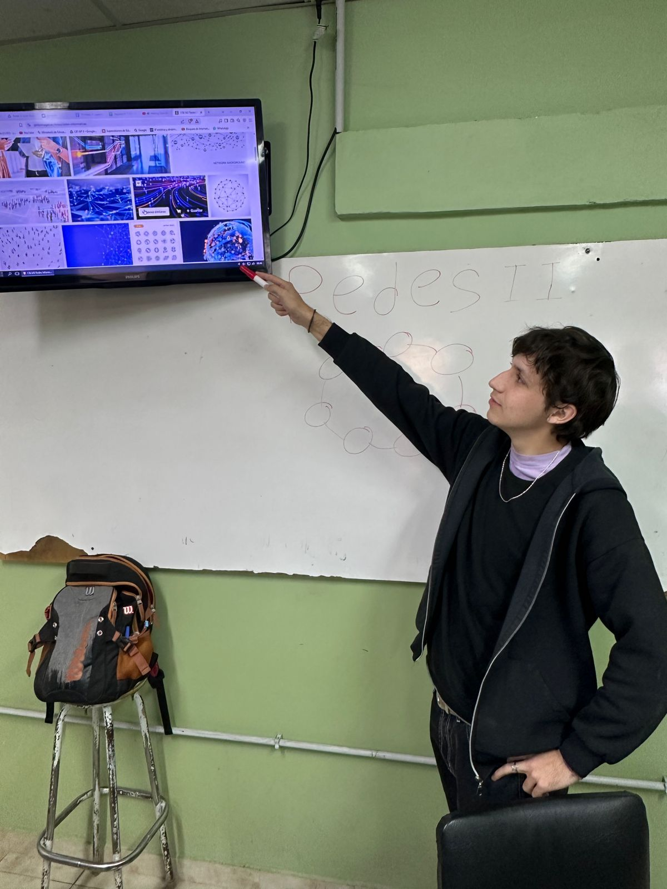
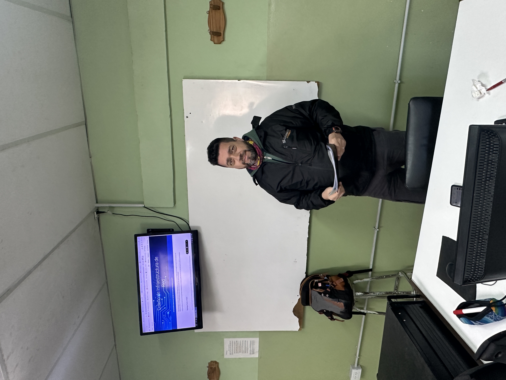

Quiénes Somos
Somos una empresa especializada en soluciones de tecnología de redes, conformada por un equipo multidisciplinario de técnicos, ingenieros en sistemas, diseñadores web y asesores comerciales comprometidos en brindar productos de alta calidad, soporte confiable y servicios personalizados para hogares, empresas e instituciones educativas. Entre ellos destacan...
Tobias Montani – Subdirector
Tobias es el subdirector de la empresa y se encarga de supervisar los proyectos estratégicos. Con más de 10 años de experiencia en gestión de equipos y desarrollo de software, es reconocido por su liderazgo y visión analítica. Fuera del trabajo, le apasiona la astronomía y suele organizar charlas comunitarias sobre ciencia y tecnología.
Uziel Rosas – Coordinador de Desarrollo

Uziel lidera el equipo de desarrollo y asegura la calidad técnica de todos nuestros productos digitales. Tiene una fuerte vocación por la innovación y la enseñanza, y ha sido mentor de jóvenes programadores. En su tiempo libre, compone música instrumental y participa en eventos de robótica educativa.
Sebastián Zumpano – Analista Funcional
Sebastián se encarga de entender las necesidades del cliente y traducirlas en soluciones prácticas. Es meticuloso, comunicativo y siempre dispuesto a encontrar mejoras. Graduado en sistemas, colabora también con fundaciones tecnológicas como voluntario. Practica ciclismo y es fanático del ajedrez.
Misión, Visión y Valores
Nuestra Misión
Desarrollar soluciones tecnológicas que transformen la manera en que las personas y las empresas interactúan con el mundo digital, poniendo siempre a los usuarios en el centro de todo lo que hacemos.
Nuestra Visión
Ser reconocidos como líderes en innovación digital en Latinoamérica, impulsando cambios reales a través de la creatividad, la responsabilidad y la excelencia tecnológica.
Nuestros Valores
- 🚀 Compromiso con la innovación
- 🤝 Trabajo en equipo con respeto
- 💡 Creatividad para resolver problemas
- 🌱 Sostenibilidad y responsabilidad social
- 📈 Mejora continua y aprendizaje constante